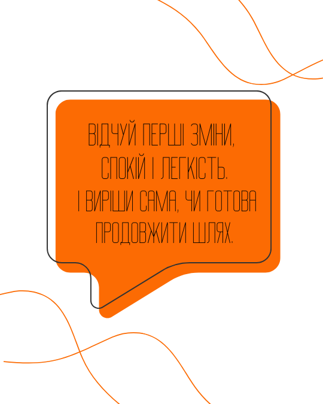

«ЧитКод — Нейрострункість» — це науково обґрунтована програма
корекції харчової поведінки.
Ми працюємо на рівні мозку, гормональної системи й емоційних
реакцій.
Через нейропрактики, нейротрансову терапію та функціональне
харчування. Ми відновлюємо природні механізми регуляції апетиту,
ваги та задоволення.
Без насильства. Без крайнощів.
Лише наука, психологія і результат, який тримається.
Ми не воюємо з тілом - ми відновлюємо зв’язок між мозком, емоціями і тілом, де народжується справжня стрункість.
Робота з підсвідомістю, що допомагає налаштувати мозок на легкість.
Нутриціологія та індивідуальні підходи для здорового тіла.
Техніки для зниження стресу та відновлення балансу.
Заняття без насильства — але з результатом, що тримається.
Програма для тебе, якщо:
Ти втомилась бути на дієтах усе життя
Вважаєш, що схуднення — це біль, контроль і відмова від усього приємного
Знаєш, що таке йо-йо ефект — вага завжди повертається
Твої зриви — твій найбільший ворог
Ти заїдаєш стрес, бо так простіше, ніж проживати
І часом тобі соромно за своє тіло, тому легше сказати «це гормони» або «спадковість»
Твоє тіло не ворог. Воно просто хоче, щоб ти нарешті його почула.
Тут починається справжня нейроперепрошивка: тіло, мозок і підсвідомість починають працювати в одному ритмі.
🎯 Результат: ясність, вирівняний апетит, спокій, зникає бажання “заїсти”.
🎯 Результат: спокій, усвідомлення, мінус 1–2 кг без контролю.
🎯 Результат: тіло реагує м’яко, апетит природний, звички закріплюються.
🎯 Результат: стабільна вага, впевненість, свобода у тілі.
🎯 Результат: стабільна вага, спокій, зникає страх “повернути все назад”.
Після цього тижня назад ти вже не повернешся. Ти побачиш, що тіло — не ворог, а союзник. Стрункість народжується всередині, а не на вагах.
Все проходить онлайн у Telegram-боті.
15–20 хвилин на день: практика, гіпносесія або коротке завдання.
Щотижня — Zoom-вебінари з експертами.
Щоденна підтримка від команди, яка допоможе не зупинятися навіть у складні моменти.
Ігрова механіка: виконуєш завдання, накопичуєш бали і змагаєшся за головний приз — повернення вартості програми.
«Нейрострункість» — це трансформаційна 4-тижнева програма-гра, що поєднує сучасну нутриціологію, роботу з підсвідомістю та підтримку нервової системи. Мета — перепрограмувати харчові звички, навчитися чути своє тіло та запустити природний процес зниження ваги без жорстких дієт.
Програма створена для жінок, які:
Не потрібно мати ідеальну дисципліну — ми працюємо через м’яке налаштування мозку та тіла, а не через силу волі.
Програма триває 4 тижні в онлайн-форматі.
Для учасниць VIP-тарифу передбачено додаткові умови високої цінності.
В середньому 15–20 хвилин на день. Програма створена так, щоб легко інтегруватися у твій звичний ритм життя.
Ви зможете харчуватися за готовим меню, розробленим лікарем.
Чи обов’язково дотримуватись меню? Ні, не обов’язково 😊 Ви можете або йти за готовим меню, або користуватись конструктором раціону, який також буде надано у програмі.
Так! Навіть бажано. «Нейрострункість» — це інший рівень роботи: ми не змінюємо тільки меню, а перепрограмовуємо реакції мозку, що впливають на вибір їжі, апетит і задоволення.
Не обов’язково. Але якщо у вас є хронічні захворювання чи гормональні порушення, рекомендується консультація лікаря програми (входить у VIP-тариф).
Після реєстрації ви отримуєте посилання на оплату та доступ до Telegram-групи. Усі матеріали залишаються у вас навіть після завершення гри.
Так! Програма повністю онлайн, записи зустрічей зберігаються, тож ви зможете проходити у зручний для себе час.
Нічого страшного. Головне — рухатися у своєму темпі. Навіть часткова участь дає помітний результат, бо робота йде через підсвідомість і нервову систему.
Так. Програма рекомендується для учасниць від 18 років.
Реальні відгуки учасниць програми «Нейрострункість»
Ми розуміємо, що рішення прийняти нелегко…
Можливо, ти сумніваєшся, чи спрацює це для тебе.
Можливо, вже пробувала десятки способів і не віриш у результат.
Ми впевнені в нашій програмі.

Тому даруємо можливість спробувати її безкоштовно — у демо-версії
“Чит-Код: Нейрострункість” (5 днів).